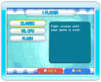
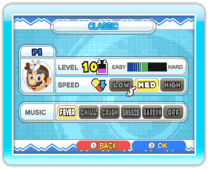
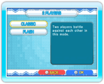
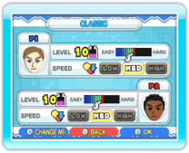

14 |
Spellen voor 1 of 2 spelers (Dr. Mario) |
 |
 
● 1 speler In dit speltype kun je een Dr. Mario-spel voor één speler spelen. Nadat je in het Dr. Mario-menu hebt gekozen voor 1 PLAYER, kun je kiezen uit drie spellen: CLASSIC, VS. CPU en FLASH. Als je het spel hebt gekozen dat je wilt spelen, verschijnt het instellingenscherm. Je kunt de moeilijkheidsgraad (LEVEL), de snelheid waarmee de capsules naar beneden vallen (SPEED) en de achtergrondmuziek (MUSIC) instellen. Als je klaar bent met kiezen, begint het spel. Opmerking: als je de speltypen VS. CPU of FLASH speelt, moet je ook je computergestuurde tegenstander instellen.  
● 2 spelers In dit speltype speel je Dr. Mario met twee spelers. Nadat je in het Dr. Mario-menu hebt gekozen voor 2 PLAYER, kun je kiezen uit twee spellen: CLASSIC en FLASH. Nadat je een spel hebt gekozen, kun je de instellingen voor iedere speler bepalen. Je kunt ook andere Mii-personages kiezen door op Als het spel is afgelopen, verschijnt het resultatenscherm. Speler 1 kan er vervolgens voor kiezen om het nog eens te proberen (TRY AGAIN) of om te stoppen (QUIT). Opmerking: om een spel voor twee spelers te kunnen spelen, moet er een tweede Controller op het Wii-systeem zijn aangesloten. |

 |
 |
 |